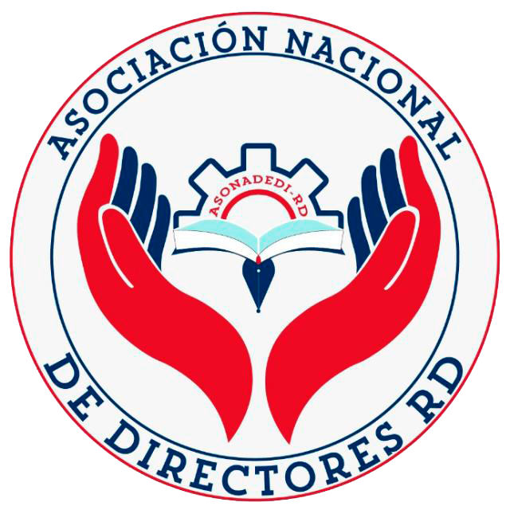

♡
Bienestar Directivo
Equilibrio emocional, manejo del estrés, autocuidado y liderazgo saludable.

ASONADEDI-RDAsociación Nacional de Directores“Bienestar para liderar, liderazgo para transformar”

El VI Congreso Internacional de Gestión Educativa ASONADEDI-RD 2026 será un espacio de formación, reflexión, intercambio de experiencias e innovación dirigido al fortalecimiento del liderazgo y la gestión educativa.
CONOCE EL CONGRESO ❯Equilibrio emocional, manejo del estrés, autocuidado y liderazgo saludable.
Acompañamiento docente, gestión curricular y mejora de los aprendizajes.
Herramientas digitales e IA aplicadas a la gestión educativa.
Datos, evidencias y toma de decisiones para transformar los centros educativos.

Conferencia Magistral

Segunda Conferencia

“Más allá del cargo: carácter, virtudes y valores que transforman”

“Dueño de mi tiempo: el arte de liderar sin dejar de vivir”
Fotografías oficiales pendientes de incorporar.
Bienestar y Liderazgo Educativo · Hotel Crowne Plaza · 24 y 25 de noviembre de 2026
Acreditaciones, entrega de materiales y presentación de logros y memorias de congresos anteriores.
Grupo de baile del Centro en Artes Benito Juárez. Pretaller «Repensando el Bienestar Total del Director», Lic. Aquiles Julián (Proyecto Educativo Nacional, PEN).
Equipo de sonido.
Obispo Manuel Ruiz, Arquidiócesis Santo Domingo Este.
Maestro de ceremonia.
Ing. Carlos Manuel Francisco, presidente ASONADEDI-RD.
Carlos Manuel Francisco, presidente ASONADEDI-RD.
Participan Fior Daliza González, Yván Calendario, Víctor Mártir y Yari Starei Pichardo.
Clara Joa Siulin, directora de INAFOCAM.
Ancell Schecker, viceministra de Asuntos Técnicos y Pedagógicos.
Jacqueline Malagón, exministra de Educación. (Coincide en horario con la conferencia anterior, según el programa).
Andrea Suero y Rosa Ureña.
Yari Pichardo, coordinadora general.
Dra. Eleonora Enciso, conferencista internacional.
Claudia Albornoz, conferencista internacional.
Jocelyn Vásquez: «Mi bienestar también importa», «Cuidar mi salud para liderar mejor», «Del estrés al equilibrio emocional», «Liderar sin desgastarse» y «Mi compromiso con el bienestar».
Vestimenta: negro con un adorno dorado. Talento artístico de directores, presentación artística y orquesta en vivo.
Ángela Español, fundadora y presidenta ejecutiva de PULSORIA.
Julio Leonardo Valeirón, psicólogo educador y maestro de generaciones en Psicología.
Divina García, técnica docente de INAFOCAM, técnica docente de Participación Comunitaria y exdirectora de Orientación y Psicología.
Regina Rodríguez, Betty Escolástico, Welinton Mejía, Reynaldo Rojas y Gelson Navarro.
Víctor Mártir, secretario general ASONADEDI-RD.
Palabras de cierre, proyecciones de ASONADEDI, entrega simbólica de memorias y foto oficial. Carlos Manuel Francisco, presidente ASONADEDI-RD.
Los horarios y las actividades se transcribieron del programa oficial facilitado por la organización. Algunas actividades coinciden en horario.
DEMOSTRACIÓN: la recepción de inscripciones y comprobantes todavía no está habilitada. No realices pagos ni envíes información personal a través de esta página.
Datos informativos para la demostración. El costo previsto es RD$ 2,500.00. No realices pagos hasta que ASONADEDI-RD anuncie oficialmente la apertura de inscripciones.
ASONADEDI-RD · Asociación Nacional de Directores de Centros Educativos Públicos de la República Dominicana.
La inscripción se confirma únicamente después de verificar el comprobante de pago. Contacto oficial: pendiente de configurar.